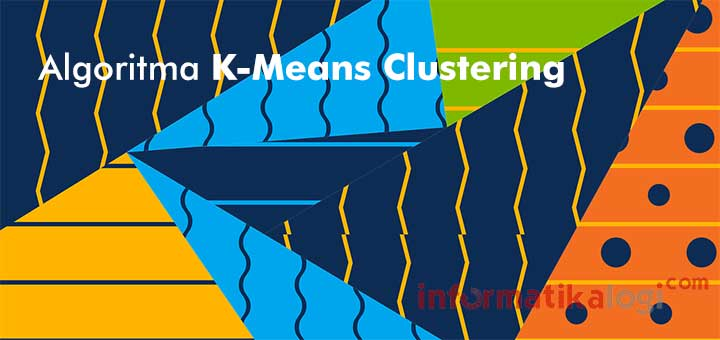
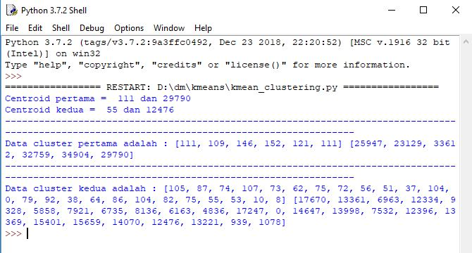

Penjelasan k-mean clustering¶

Apakah yang dimaksud K-Mean Clustering ???¶
K-means Clustering adalah salah satu “unsupervised machine learning algorithms” yang paling sederhana dan populer .Tujuan dari algoritma ini adalah untuk menemukan grup dalam data, dengan jumlah grup yang diwakili oleh variabel K. Variabel K sendiri adalah jumlah cluster yang kita inginkan,Metode k-mean clustering ini mempartisi data ke dalam cluster sehingga data yang memiliki karakteristik yang sama dikelompokkan ke dalam satu cluster yang sama dan data yang mempunyai karateristik yang berbeda di kelompokan ke dalam cluster yang lain.
K-means ditemukan oleh beberapa orang yaitu Lloyd (1957, 1982), Forgey (1965) , Friedman and Rubin (1967) , and McQueen (1967) [[1\]](https://id.wikipedia.org/wiki/K-means#cite_note-:0-1). Ide dari *clustering* pertama kali ditemukan oleh Lloyd pada tahun 1957, namun hal tersebut baru dipublikasi pada tahun 1982. Pada tahun 1965, Forgey juga mempublikasi teknik yang sama sehingga terkadang dikenal sebagai Lloyd-Forgy pada beberapa sumber.
Algoritma K-Means¶
Secara sederhana algoritma K-Means dimulai dari tahap berikut :
- Pilih K buah titik centroid.
- Menghitung jarak data dengan centroid.
- Update nilai titik centroid.
- Ulangi langkah 2 dan 3 sampai nilai dari titik centroid tidak lagi berubah.
Kita coba gambarkan dalam sebuah flowchart, agar kita lebih mudah memahami algoritma K-Means. Berikut adalah gambaran flowchartnya :

Jadi dari flowchart diatas, kita memiliki input dan 3 buah proses. Yaitu pertama adalah proses menghitung centroid, kemudian proses kedua menghitung data yang akan dikelompokkan dengan centroid, kemudian proses ketiga adalah mengelompokkan data berdasarkan jarak terdekat (minimum distance). Dan kita membuat perulangan dengan kondisi "apakah posisi centroid tetap dan tidak ada perubahan terhadap datanya ?" apabila ya maka kita selesai melakukan pengelompokan. Tapi apabila masih ada perubahan centroid maka kita update kembali nilai centroid melalui proses pertama.
Kelebihan dan kekurangan k-mean clustering¶
Berikut kelebihan dan kekurangan dari k-means clustering Kelebihan k-means:
Kelebihan k-means
- Mudah dilakukan saat pengimpelementasian dan di jalankan.
- Waktu yang di butuhkan untuk melakukan pembelajaran relatif lebih cepat.
- Sangat fleksibel, adaptasi yang mudah untuk di lakukan
- Sangat umum penggunaannya.
- Menggunakan prinsip yang sederhana dapat di jelaskan dalam non-statistik.
Kekurangan dari k-means:
-
Sebelum algoritma di jalankan, titik K diinisialisasikan secara random sehingga pengelompokan data yang di dapatkan bisa berbeda-beda. Namun apabila nilai yang diperoleh acak untuk penginisialisasi kurang baik maka pengelompokan yang didapatkn menjadi tidak optimal.
-
Apabila terjebak dalam kasus yang biasanya di sebut dengan curse of dimensionality. Hal ini pun akan terjadi apabila salah satu data untuk melakukan pelatihan mempunyai dimensi yang sangat banyak, sebagai contoh; jika ada data pelatihan yang terdiri dari 2 buah atribut saja maka dimensinya ada 2 dimensi pula, namun akan berbeda jika ada 20 atribut maka akan ada 20 dimensi yang di miliki. Adapun salah satu dari cara kerja algoritma cluster ini ialah untuk mencari jarak terdekat dari antara k titik dangan titik lainnya. Apabila ingin mencari jarak untuk antar titik dari 2 dimensi hal itu masih mudah untuk di lakukan, namun bagaimana dengan 20 buah dimensi hal tersebut akan menjadi lebih sulit untuk di lakukan pencarian jarak.
-
Apabila hanya ada terdapat beberapa buah titik sampel data yang ada, maka hal yang mudah untuk melakukan penghitungan dan mencari jarak titik terdekat dengan k titik yang telah di lakukan inisialisasi yang secara acak. Namun jika ada banyak titik data, misalkan satu juta data, maka perhitungan dan pencarian titik terdekat akan sangat membutuhkan waktu yang lama. Proses tersebut dapat dipercepat namun dibutuhkan sebuah struktur data yang lebih rumit seperti kD-tree atau hashing untuk melakukan proses tersebut.
-
Adanya penggunaan k buah random, tidak ada jaminan untuk menemukan kumpulan cluster yang optimal.
# Contoh studi kasus k-mean clustering
**Contoh : **
Menerapkan K-Means Clustering Pada Data-jumlah-penumpang-bus-09-September 2017 di jakarta
Sebagai contoh, saya akan menunjukkan cara kerja algoritma K-means dengan dataset sampel dari data Data-jumlah-penumpang-bus-09-September 2017 di jakarta. Disini Kides hanya akan menggunakan dua fitur colom pada data tersebut untuk dijadikan variabel :jumlah bus dan jumlah penumpang . Data ini bersumber :<<http://data.jakarta.go.id/dataset/b377e342-8a21-4012-af08-bdaf57579381/resource/c9432d08-f2d1-4004-9fee-9419ad233ecf/download/Data-jumlah-penumpang-bus-09-September.csv> Secara umum, algoritma ini dapat digunakan untuk sejumlah variabel , asalkan jumlah sampel data jauh lebih besar dari jumlah variabel. Mari kita lihat langkah-langkah tentang bagaimana algoritma K-means Clustering bekerja menggunakan bahasa pemrograman Python.
Langkah 1: Import Libraries
Pada kasus ini , saya akan menggunakan library pandas dan matplotlib.pyplot
import csv import math import random import pandas as pd import numpy as np import matplotlib.pyplot as plt akar = math.sqrt
cara instal library pandas dan matplotlib.pyplot yaitu dengan cara membuka cmd administrator lalu ketik
pip install pandas pip install matplotlib
Seperti yang dapat Anda lihat di atas , saya mengiport libraries:
>> Panda untuk membaca dan menulis spreadsheet
>>Matplotlib untuk visualisasi data
Langkah 2: Menginput Data
Data yang digunakan yakni dataset sampel Data-jumlah-penumpang-bus-09-September 2017 di jakarta. Dibawah ini adalah script untuk menginput data.
def program(): dataset = pd.read_csv("Data-jumlah-penumpang-bus-09-September.csv")
Langkah 3: Mengambil dua fitur colom pada data tersebut untuk dijadikan variable
# mengambil kolom 4 dan 5 coloum_jmlbus = dataset.iloc[:, 3].values coloum_jmlpenumpang = dataset.iloc[:, 4].values
**Langkah 4: Mencari centroid secara acak menggunakan import random dan menampilkan hasil pencarian **
def mencari_centroid_dst(): # mengambil letak centroid pertama acak random1 = [] for i in range(31): random1.append(i) hasil_random1 = random.choice(random1) # hasil centroid pertama acak cen_pertama1 = coloum_jmlbus[hasil_random1] cen_pertama2 = coloum_jmlpenumpang[hasil_random1] # mengambil letak centroid kedua acak random2 = [] for j in range(31): random2.append(j) hasil_random2 = random.choice(random2) # hasil centroid kedua acak cen_kedua1 = coloum_jmlbus[hasil_random2] cen_kedua2 = coloum_jmlpenumpang[hasil_random2]
Langkah 5: Menghitung distance dari hasil pencarian centroid secara acak dengan cara mendeklarasikan list lalu hasil dari rumus dimasukkan ke list tersebut
if (cen_pertama1==cen_kedua1 and cen_pertama2==cen_kedua2): mencari_centroid_dst() else: # menghitung distance ke centroid 1 dan centroid 2 hasil_hitung_pertama1 = [] hasil_hitung_pertama2 = [] hasil1 = [] hasil2 = [] anggota1_kiri = [] anggota1_kanan = [] anggota2_kanan = [] anggota2_kiri = [] jml_awal1 = [] jml_awal2 = [] for a in range(len(coloum_jmlbus)): for b in range(len(coloum_jmlpenumpang)): if (a==b): jarak1 = akar(((cen_pertama1 - coloum_jmlbus[a])**2) + ((cen_pertama2 - coloum_jmlpenumpang[a])**2)) jarak2 = akar(((cen_kedua1 - coloum_jmlbus[a])**2) + ((cen_kedua2 - coloum_jmlpenumpang[a])**2)) if(jarak1 < jarak2): hasil1.append(jarak1) anggota1_kiri.append(coloum_jmlbus[a]) anggota1_kanan.append(coloum_jmlpenumpang[a]) hasil_hitung_pertama1.append(jarak1) jml_awal1.append(jarak1) hasil_hitung_pertama2.append(jarak2) else: hasil2.append(jarak2) anggota2_kanan.append(coloum_jmlpenumpang[a]) anggota2_kiri.append(coloum_jmlbus[a]) hasil_hitung_pertama2.append(jarak2) jml_awal2.append(jarak2) hasil_hitung_pertama1.append(jarak1)
**Langkah 6: Menghitung rata-rata tiap kolom sebagai pusat cluster yang baru dengan rumus **
# menghitung rata-rata tiap kolom sebagai pusat cluster yang baru
hasil1_baru = []
hasil2_baru = []
anggota_clus1 = []
anggota_clus2 = []
seluruh_kiri = []
seluruh_kanan = []
anggota1_kiribaru = []
anggota1_kananbaru = []
anggota2_kiribaru = []
anggota2_kananbaru = []
rata1_a = sum(anggota1_kiri) / len(anggota1_kiri)
rata1_b = sum(anggota1_kanan) / len(anggota1_kanan)
rata2_a = sum(anggota2_kiri) / len(anggota2_kiri)
rata2_b = sum(anggota2_kanan) / len(anggota2_kanan)
Langkah 7: Menghitung distance dari pusat cluster yang baru lalu dimasukkan ke list
for j in range(len(coloum_jmlbus)): for k in range(len(coloum_jmlpenumpang)): if(j==k): dist1 = akar(((rata1_a - coloum_jmlbus[j])**2) + ((rata1_b - coloum_jmlpenumpang[j])**2)) dist2 = akar(((rata2_a - coloum_jmlbus[j])**2) + ((rata2_b - coloum_jmlpenumpang[j])**2)) if (dist1<dist2): hasil1_baru.append(dist1) seluruh_kiri.append(dist1) seluruh_kanan.append(dist2) anggota_clus1.append(coloum_jmlbus[j]) anggota1_kiribaru.append(coloum_jmlbus[j]) anggota1_kananbaru.append(coloum_jmlpenumpang[j]) else: hasil2_baru.append(dist2) seluruh_kanan.append(dist2) seluruh_kiri.append(dist1) anggota_clus2.append(coloum_jmlbus[j]) anggota2_kiribaru.append(coloum_jmlbus[j]) anggota2_kananbaru.append(coloum_jmlpenumpang[j])
Langkah 8: Menampilkan secara visualisasi menggunakan matplotlib
if (len(hasil1)==len(hasil1_baru) and len(hasil2)==len(hasil2_baru)): plt.scatter(seluruh_kiri,seluruh_kanan,c='yellow') plt.show()
Langkah 9: Menampilkan hasil k-mean clustering
print ("Centroid pertama = ",cen_pertama1,"dan",cen_pertama2) print ("Centroid kedua = ",cen_kedua1,"dan",cen_kedua2) print ("----------------------------------------------------------------------------------------------------------------------------------------------") print ("Data cluster pertama adalah :",anggota1_kiri,anggota1_kanan) print ("----------------------------------------------------------------------------------------------------------------------------------------------") print ("Data cluster kedua adalah :",anggota2_kiri,anggota2_kanan) else: program() mencari_centroid_dst() program()
##### Hasil output dari program di atas
.jpg)
